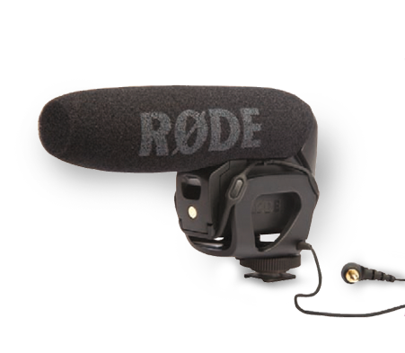

Essential Tools You Need to Shoot Video Now
Recording video with an HD-DSLR can seem like nothing more than a novelty for a photographer who is more accustomed to capturing still images. However, once you see the quality of HD-DSLR video, it’s hard not to be inspired to take advantage of this asset in your camera.
One thing that becomes quickly obvious, though, is that shooting great video takes more than just pressing the camera’s record button. Video makes different demands on a videographer than it does on a still photographer. As a result, there are different skills and accessories that are needed.
With that in mind, we’ve put together a list of several categories of products that are essential for anyone who wants to become an adept filmmaker. And for each category, we’ve picked specific products we feel are good filmmaking tools with which to get started.
Camera
Camera
Virtually every new camera on the market these days can also shoot video. Whether the camera is built around a full-frame, APS-C or Micro 4/3 sensor, these imaging chips are larger than the 3/4- or 1/2-inch sensor commonly found in a video camera. These larger sensors, particularly a full-frame sensor, provide a shallower depth of field that is more comparable to a motion picture camera than a handy cam.
Though a full-frame DSLR such as the Canon 5D Mark III has become the benchmark to which other cameras are often compared, models with smaller sensors are being used to produce professional quality results as well. And now with the advent of 4K capture, you can expect to see more consumer-level cameras offering ultra-resolution regardless of sensor size.
The Panasonic LUMIX DMC-GH4 (left, www.panasonic.com) is the first consumer-level camera to do so at a fraction of the cost of other high-end models, including the Red series. The successor to the GH3, the GH4 follows the form factor of a traditional DSLR, but it now features a maximum video resolution of 5840 x 2160. This not only produces footage that will look great on new 4K television screens, but it also provides the ability to crop, while still maintaining high-resolution quality. Though the APS-C sensor used in this series may not deliver the shallow depth of field of a full-frame sensor, its color rendering combined with its user-friendly form factor has made the series popular among videographers.
Neutral Density Filter
Neutral Density Filter
When capturing video, the optimal shutter speed will either be 1/50th or 1/60th of a second based on the frame rate at which you are recording, making your aperture and ISO the only means by which you can adjust exposure. This can be problematic when you’re shooting under bright conditions, so you’ll have to reduce the amount of light allowed to pass through the lens. This is where a neutral-density (ND) filter becomes a valuable asset.
The Lee 100mm Filter Holder system (above, www.leefilters.com) provides the ability to use 100mm filter lenses with a variety of filter thread sizes. This makes it convenient to use neutral density filters, including the company’s new Big Stopper and Light Stopper, which reduce the light passing through the lens by ten stops or six stops, respectively.
LED Lighting
LED Lighting
HD-DSLRs are often touted for their ability to produce incredible results under extremely lowlight conditions. Despite that, video always looks better when the scene and the subject are lit. It provides better color, contrast and detail when it’s illuminated, which is why lighting becomes an essential part of a photographer’s kit.
The Litepanels Luma Pro (www.litepanels.com) delivers an LED light source, which is both strong and incredibly portable. The unit above delivers daylight-balance illumination in a 50-inch spread, can be easily mounted on the camera’s hot shoe or onto a camera rig, and is powered by six AA batteries or a D-tap power cable. It provides flicker-free results at any frame rate, as well as a consistent color temperature whether used at 100 percent output or dimmed down.
Focusing Rig
Focusing Rig
Stability is an important consideration when using an HD-DSLR for video capture. A focusing rig provides a much-needed platform for improving stability when using a hand-held camera. A rig also offers a more precise mechanism for manually focusing the lens as well as attaching more accessories such as a light, digital audio recorder or external LCD monitor.
The IDC System Zero Kit (www.idcphotovideo.com) provides an ultra-portable alternative to shoulder rigs. National Geographic photographer Bruce Dorn designed the gearless follow-focus system shown above to provide for smooth follow-focus adjustment with virtually any DSLR lens. When combined with a magnified eyepiece, it provides three points of contact with the camera to deliver maximum stability.
External Audio Recorder
External Audio Recorder
When audio is recorded using an external microphone, the sound captured by the camera can be acceptable, though not great. For optimal quality, an external audio recorder is essential, allowing the microphone attached to the recorder to be placed in closer proximity to the subject than the camera itself. This is especially important if you are recording multiple subjects.
The Zoom H6 (www.zoom.co.jp), successor to the popular Zoom H4n, features four interchangeable input capsules, X/Y, MS, Shotgun and Dual XLR/TRS Combo to make it incredibly versatile. Its four XLR inputs provide support for a separate mic, including a wireless lavalier. The sensitivity of the mics combined with an uncompressed, high bit-rate of recording delivers audio far superior than anything that could be achieved in-camera.
Viewfinder Adapter

Viewfinder Adapter
When having to use the LCD for composition rather than the viewfinder, bright light hitting the camera screen can make focusing a challenge. This is why using a viewfinder adapter, which shields the LCD from stray light as well as slightly magnifying the screen, becomes indispensable.
The Hoodman Custom Finder Kit for DSLR Capture (www.hoodmanusa.com) allows the company’s HoodLoupe to be secure when positioned on virtually any camera. The large eyecup provides a clear view of the screen, whether you are using a full-sized HD-DSLR or a smaller mirrorless camera. Even without the use of a focusing rig, the use of this accessory provides great stability, as the eyepiece is resting on the face, providing an additional point of physical contact.
Microphone Selection
Microphone Selection
As previously mentioned, a shotgun microphone, attached to your camera via the hot shoe or to a camera rig, isolates the sound from the subject and minimizes the sound created by the camera or the operator. Due to its narrow pick-up area, it’s a far better solution than what is provided with an on-board microphone. The RØDE VideoMic Pro (www.rodemic.com) is a shotgun mic that is designed around a ½-inch condenser capsule that delivers a 40 Hz-20kHz response. When seated on a camera’s hot shoe, the microphone connects to the camera’s audio input using a 3.5mm minijack connector, providing a mono signal to both left and right channels. It includes a +20dB level boost designed specifically for use with HD-DSLRs.